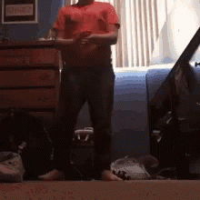

<div class="box"></div>
<style>
  .box img {
    display: block;
    border-radius: 3rem;
    z-index: 99;
    background-color: #999999;
    box-shadow: inset -5px -5px 5px rgba(0,0,0,.6), 15px 15px 2px rgba(0,0,0,.04);
    position: absolute;
    -webkit-animation: moveX 2s linear 0s infinite alternate, moveY 3.4s linear 0s infinite alternate;
    -moz-animation: moveX 2s linear 0s infinite alternate, moveY 3.4s linear 0s infinite alternate;
    -o-animation: moveX 2s linear 0s infinite alternate, moveY 3.4s linear 0s infinite alternate;
    animation: moveX 2s linear 0s infinite alternate, moveY 3.4s linear 0s infinite alternate;
  }
  
  @-webkit-keyframes moveX {
    from { left: 0; } to { left: 680px; }
  }
  @-moz-keyframes moveX {
    from { left: 0; } to { left: 680px; }
  }
  @-o-keyframes moveX {
    from { left: 0; } to { left: 680px; }
  }
  @keyframes moveX {
    from { left: 0; } to { left: 680px; }
  }
  
  @-webkit-keyframes moveY {
    from { top: 0; } to { top: 700px; }
  }
  @-moz-keyframes moveY {
    from { top: 0; } to { top: 700px; }
  }
  @-o-keyframes moveY {
    from { top: 0; } to { top: 700px; }
  }
  @keyframes moveY {
    from { top: 0; } to { top: 700px; }
  }
    </style>